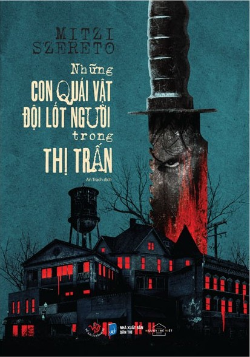

« Back
Những Con Quái Vật Đội Lốt Người Trong Thị Trấn
By Mitzi Szereto

Lời Nói Đầu
1. THỊ TRẤN SNOWTOWN
2. THẢM KỊCH Ở POSORJA:
3. CẬU BÉ SÁT NHÂN
4. DÒNG THỜI GIAN CỦA CÁC SỰ KIỆN
5. NẠN NHÂN CỦA VỤ ÁN
6. MÙA HÈ CỦA “CHÚ CÁO”
7. VỤ ÁN DAI DẲNG XOAY QUANH
8. HẮC THỦ VÀ CON MẮT THỦY TINH
9. GÓC NHÌN CỦA KẺ SÁT NHÂN
10. TỘI ÁC ĐÃ TRÀN ĐẾN THỊ TRẤN PENAL!
11. TỘI ÁC ĐÃ TRÀN ĐẾN THỊ TRẤN PENAL! (Tt)
12. TÊN MỤC SƯ HẮC ÁM.
13. “LA BELLA ELYIRA”:
14. CHUYỆN GÌ ĐÃ XẢY RA GIỮA ÔNG BÁC SĨ,
15. BÍ ẨN BÊN TRONG NGÔI NHÀ
16. KẺ VÔ DANH Ở VÙNG VAN DIEMEN